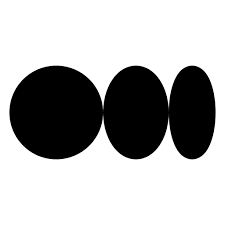

<!-- <nav class="mt-4">
  <div
    class="px-24 max-w-[1200px] mx-auto text-black hidden h-10 items-center justify-between md:flex"
  >
    <div class="flex justify-around gap-2" routerLink="/">
      
      <h3 class="mt-4 text-base font-normal text-[#424242]">Medium</h3>
    </div>

    <ul class="flex justify-around gap-4">
      <li class="flex" routerLink="User/Write">
        <svg
          xmlns="http://www.w3.org/2000/svg"
          fill="none"
          viewBox="0 0 24 24"
          stroke-width="1.5"
          stroke="currentColor"
          class="w-5 h-6 mt-1 text-[#424242]"
        >
          <path
            stroke-linecap="round"
            stroke-linejoin="round"
            d="M16.862 4.487l1.687-1.688a1.875 1.875 0 112.652 2.652L10.582 16.07a4.5 4.5 0 01-1.897 1.13L6 18l.8-2.685a4.5 4.5 0 011.13-1.897l8.932-8.931zm0 0L19.5 7.125M18 14v4.75A2.25 2.25 0 0115.75 21H5.25A2.25 2.25 0 013 18.75V8.25A2.25 2.25 0 015.25 6H10"
          />
        </svg>

        <button class="text-[#424242] ml-2">Write</button>
      </li>
      <li>
        <button
          class="text-[12px] bg-[#1a8917] text-white rounded-full px-4 py-2"
        >
          Publish
        </button>
      </li>
      <li>...</li>
      <li class="mt-1">
        <svg
          xmlns="http://www.w3.org/2000/svg"
          fill="none"
          viewBox="0 0 24 24"
          stroke-width="1.5"
          stroke="currentColor"
          class="w-6 h-6"
        >
          <path
            stroke-linecap="round"
            stroke-linejoin="round"
            d="M14.857 17.082a23.848 23.848 0 005.454-1.31A8.967 8.967 0 0118 9.75v-.7V9A6 6 0 006 9v.75a8.967 8.967 0 01-2.312 6.022c1.733.64 3.56 1.085 5.455 1.31m5.714 0a24.255 24.255 0 01-5.714 0m5.714 0a3 3 0 11-5.714 0"
          />
        </svg>
      </li>
      <li>
        
      </li>
    </ul>
  </div>
</nav> -->

<div class="mt-20 flex ml-40">
  <button
    class="rounded-full border border-[#424242] w-[36px] h-[35px] mt-[7px] flex justify-center items-center"
    routerLink="User/Write"
  >
    <svg
      xmlns="http://www.w3.org/2000/svg"
      fill="none"
      viewBox="0 0 24 24"
      stroke-width="1.5"
      stroke="currentColor"
      class="w-[22px]"
    >
      <path stroke-linecap="round" stroke-linejoin="round" d="M12 6v12m6-6H6" />
    </svg>
  </button>

  <h1 class="text-[#bdbdbd] ml-3 mt-1 text-3xl font-light">Text Editor</h1>
</div>
